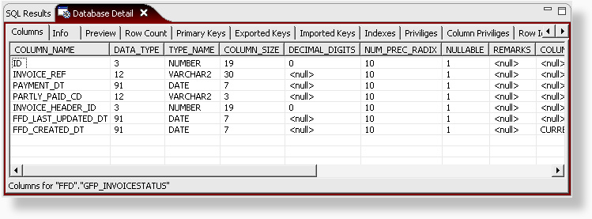
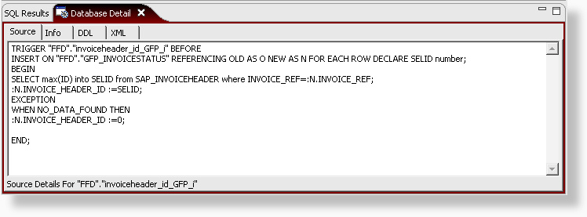

The database detail view shows detailed information for
whatever node is selected in the database structure view. What is
displayed will depend on the type of database that you are using.
The detail information is cached for improved performance. To refresh
the information, make sure the table widget is active and press F5 to
reload the information.

